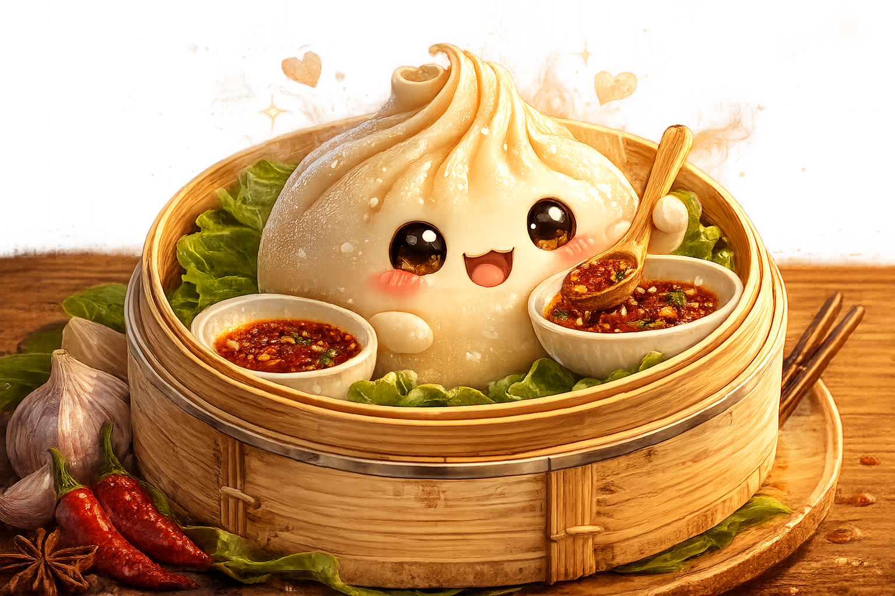

North Kanara · South Kanara · Mumbai · San Francisco Bay
One family table, four beloved shores.
Rupa preserves the old coastal grammar: ghee roasts, spice pastes, patient tempering, and Amchi kitchen notes. Ruchi carries the same care into a modern pantry: layered cakes, matcha, coffees, soda floats, and drinks made for today's gatherings.
